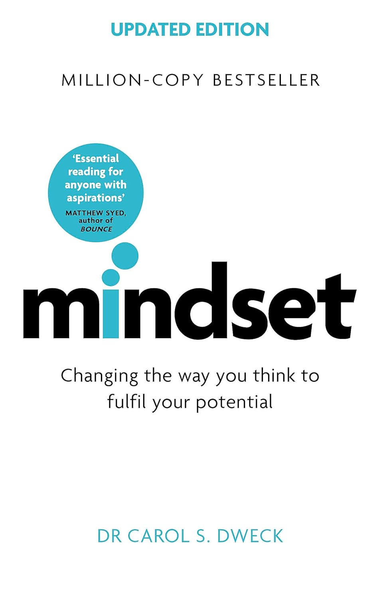

We’ve often heard about people who suddenly become rich by winning lotteries, only to end up poorer than before. They thought that having more money would solve their problems, but instead, they find themselves in a worse financial situation than they were in before winning. What is the reason for this? While lack of financial literacy is part of the problem, it isn’t the complete answer. There is something more fundamental that plays a crucial role in sustaining financial stability.
Let’s consider another scenario: Actors/actresses who made lakhs/crores in their careers during their active years, but in their old age, they become so poor that you might recall the idea mentioned in my "Rich Dad Poor Dad" book summary.
Robert Kiyosaki in "RICH DAD POOR DAD" book says: We have all heard stories of lottery winners who are poor, then suddenly rich, and then poor again. They win millions, yet are soon back where they started. Or stories of professional athletes, who at the age of 24 are earning millions, but are sleeping under a bridge 10 years later.
Do you know the root cause?
Amitabh Bachchan is one of the most respected stars in the industry. However, did you know that there was a time when Amitabh Bachchan faced so many financial challenges that even his house was about to be seized?
Back in the 1990s, Amitabh Bachchan’s company went bankrupt, and the situation was so bad that creditors came to his door every day. In an old interview with Vir Sanghvi, the actor revealed that he was under "Rs 90 crore in debt" and was on the verge of losing his house and all assets connected to his company.
He further disclosed there were “about 55 legal cases” against him. Recalling the tough times, he shared, “There were creditors on the door every day. Very embarrassing, very humiliating.”
But Amitabh Bachchan overcame these challenges and became rich again. Yes, Amitabh Bachchan successfully overcame his financial difficulties from the late 1990s.
In the early 1990s, Donald Trump was nearly $1 billion in debt personally and $9 billion in debt corporately. An interviewer asked Trump if he was worried. Trump replied, “Worrying is a waste of time. Worrying gets in my way of working to solve these problems.”
Naval Ravikant in "THE ALMANACK OF NAVAL RAVIKANT" book states: "If I lost all my money and you dropped me on a random street in any English-speaking country, within five or ten years, I'd be wealthy again. I will become rich again."
But why is it so different for a common man who loses his job? Why does finding another job feel so hard, making him feel stuck and unable to take action?What is the reason?What would be the answer ?
The answer is "MINDSET".

Disclaimer: This blog contains affiliate links, which means I earn a small commission if you make a purchase through them, at no extra cost to you. If you feel this post has made you think or created value in your life, please consider purchasing the book through my link. Your support encourages me to keep creating helpful content. Cheers!